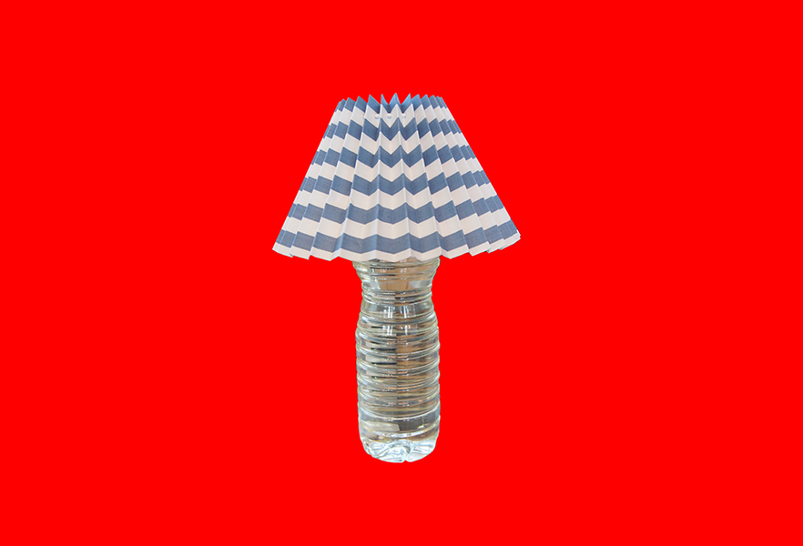

Hello
World!
Jowan
1.
What would you call the edges of a Cornish pasty ?
There is no real name for it. It is 'crimped', so you could call it a 'crimp', but that's not really it's name. It used to be filled with jam, and you would eat it at the end, like desert. Also, the miners used to leave it down the mines for the 'tinners' - the ghosts of the dead miners. - > WRONG answer…sorry better luck next one ;) They're 'CORNERS' – can't help myself with this little joke :D Speaking of Cornish pasty, in Malaysia we have something similiar…but smaller and filled with curry chicken meat and diced potato cubes, it's called Karipap (Curry puff) https://en.wikipedia.org/wiki/Curry_puff
2.
Guess the following…(these were some of the ‘Word Plays’ from my end exam project during art school in NL)
A
B
C 
A – ________ Plant B – Door ________ C – Oil ________
Previous
Next